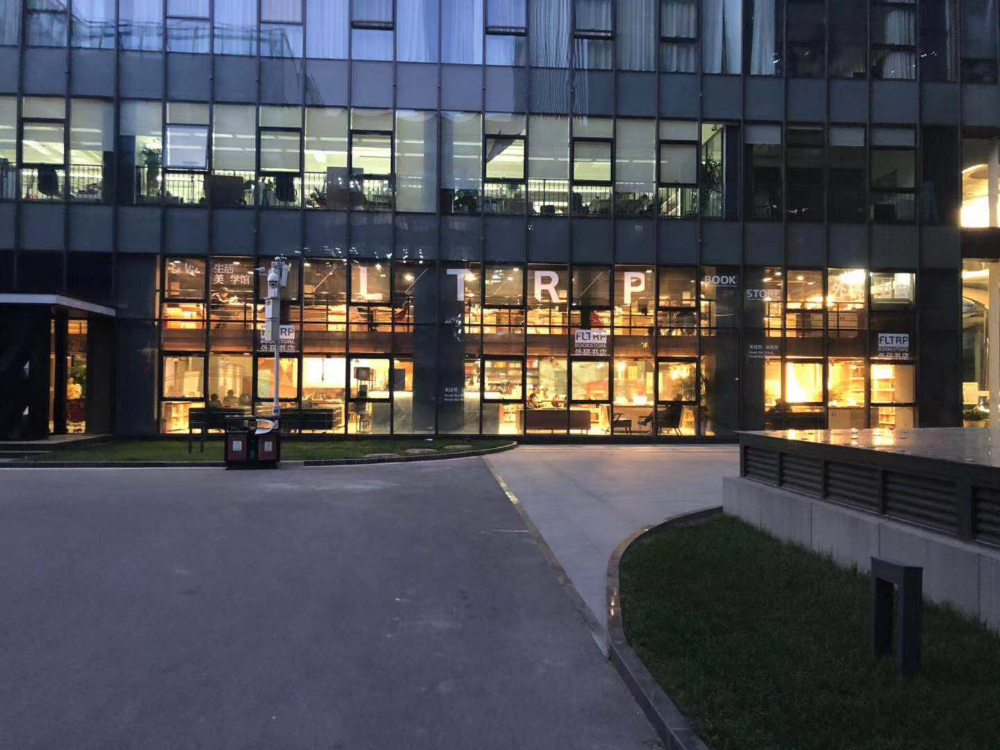

一年多前，广东人小谢背起行囊，离开温暖的广东，开启他的北漂生涯。在首堵(都)机场下机之时，有个能手绘欧洲地图，广东省内免导航指哪开哪的朋友告诉他，他脚下的机场，客运吞吐量排名全宇宙第二。而且如果不是因为在建的大兴机场，它大概率很快会超越灯塔国的亚特兰大机场登顶宇宙第一。
按捺着心中的兴奋，小谢坐上了地铁，投奔了他在北京的发小。发小在南五环一家叫某东的电商公司上班，网传这家公司的老板比较喜欢喝奶茶。还算幸运的是，在经受无数冷眼与嘲讽之后，某号称互联网公司的手机厂商某米，给小谢发了offer。14年这家公司刚刚登顶国内第一如日中天，秋招的时候该公司在南京大学开了一场宣讲会。小谢依然记得当时宣讲大厅门口立着的牌子写着，我们的征途是星辰和大海。虽然对所在的团队和做的事情还不是很满意，但考虑到自己再不上班明天就揭不开锅得出门化缘的现实，小谢还是接受了offer。
确定入职之后，小谢想着最好能和自己的发小一起同住。某东这家公司在职人数十几万，班车遍布全北京，甚至有从河北廊坊发车的点。难受的是，某米在帝都的西北角，某东在东南角，走环线大概40+公里。在认真研究完某东的班车线路图之后，小谢得出结论，除非和他的发小两人住在紫禁城里，不然同住在一起是不太现实的。无奈之下，小谢住到了下图最北边的回龙观那个点附近。也是后来他才发现，那首一度风靡朋友圈的神曲《感觉身体被掏空》歌词唱的起来征战北五环，我家住在回龙观，就是他住的回龙观
入职之后，坐在小谢左手边的是一手臂比他大腿还粗的东北大哥，右边是一特别喜欢刷微博的山东大哥。后来有天他才听同事说，山东大哥是北大的高材生。那天小谢终于明白，为什么平时山东大哥看他时，眼神里总带着一种关爱智障儿童的感觉。
小谢工作日大部分时候一日三餐都是在食堂解决，但自从看了那篇爆文《昌平名媛生活指南》，有时候他也会和同事去一下办公区对面的华润五彩城，传说中比高阶文青皮实耐操，爱喝英式下午茶的昌平名媛最常出没的地方。刚刚说的同事，其实是小谢组里一已婚生过俩娃的妹子。最近已经连着好几个周五晚上带着组里包括小谢在内的一班单身狗去吃饭看电影。说起那妹子的俩娃，去年团建去北戴河的时候，妹子带着他们和家里一保姆一起去了。后来小谢才发现，那保姆是来照顾妹子不是照顾娃的。
项目关系，小谢和一做产品的同事经常要去顺义区谈需求。地铁路漫漫，有次小谢和产品同事也不知怎么的聊起了王朔说的极品妹子的标准。江浙人，北京话，新思维，旧传统。小谢说自己今年看了好几本王朔小说，同事问他怎么现在（这么大年纪）还在看王朔，因为对他们来说王朔也算是青春期必修课，知道真相的小谢眼泪流下来。
来北京之前小谢经常看到 北京居民上班路途全国最远平均17.4公里 这样的文章标题。有次去北六环顺义工厂谈需求，午饭间休息一土著同事说自己家住南三环，每天单程2个多小时到北六环上班。还给小谢科普了个段子说北京七环的范围都已经出来了，有网友推算照着这个比例只要建到十环，日本就是北京的了。小谢一开始不明白打份工而已何必这么折腾。后来公司上市了才知道人家工号XXX，看着自己XXXXX的工号，知道真相的小谢眼泪流下来。
和港剧《三个女人一个因》里男主的爸爸利记一样，小谢的发小是个近20年的狂热利物浦球迷。又因为在北京外国语上的大学，离五道口特别近。但凡有个稍微重要的比赛，总拉着小谢去宇宙中心五道口看球，又赶上18年是世界杯年。夜晚的五道口荷尔蒙气息浓厚，喝多了的几个韩国妹子骑着小摩托大吼大叫（中韩友好中韩友好……让我们把枪口对准白人大老爷）。亚洲人、黑人、白皮肤的鬼佬都在这个北京地图上只有针尖面积的区域上快速地流动游走。码农气息浓厚的小谢是个怂娃，每次发小想把他带进夜店sensation的时候他总是严词拒绝。
现今除了五道口，西二旗也叫宇宙中心，号称制约中国互联网未来十年发展最大的瓶颈的后厂村路，就在西二旗，两个地铁站被称为宇宙双核。某米新的科技园，企鹅和快手的新大厦，都是今年入驻。本着务实求真的态度，小谢也曾认真考据了为什么五道口叫做宇宙中心。不是因为清华北大等高校众多，也不是因为灯红酒绿夜夜笙歌，而是多年前出自水木清华论坛的一张帖子。12年全国房价还没起飞的时候，五道口一小区叫华清嘉园一平能到10w。
小谢是个zz青年，一直喜欢在自己的blog写些破事瞎叨叨。之前他曾经说要写篇文章介绍下北京值得去的地方。即将离开之际，他还没有完成这项宏大的任务。原因很简单，北京太多元太有文化，而他是个文盲hold不住。按照”但是”之前都是废话的套路，接下来才是重点。他想向所有和他一样的伪红迷推荐一下北京植物园的曹雪芹纪念堂和拍87红楼梦建的大观园。附带个冷知识，87红楼的编剧周岭认真考据过，曹雪芹披阅十载、增删五次所在的悼红轩，很可能是旧址在西单小石虎胡同的右翼宗学，而不是在香山的黄叶村。大才子徐志摩锅锅，也在小石虎胡同的旧址呆过
离京前的最后一个周末，小谢在最熟悉的咖啡店码完了这篇文章。来北京之前小谢和他爹说自己大概呆3年最多5年。后来发现自己还是too young too simple，大帝都实在高攀不起，太特么有文化了，每天都感觉自己宛如智障。最后，引网络的一句话，北京是中国的纽约，中国的洛杉矶，中国的旧金山，中国的华盛顿，中国的波士顿，If you can stay here，you can stay anywhere
